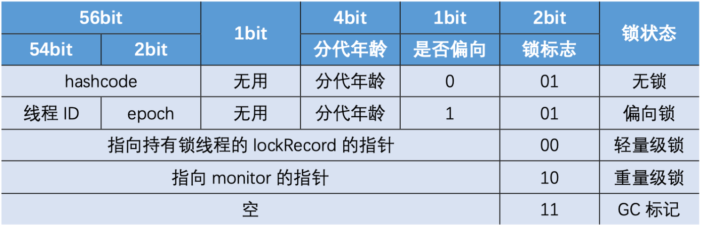
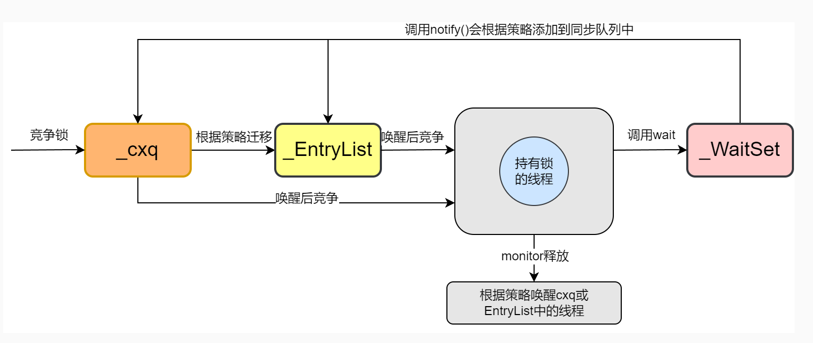
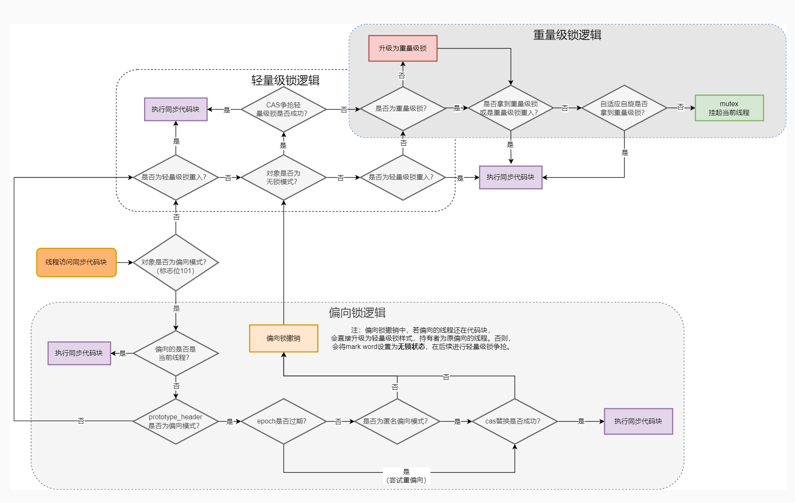

Java并发编程(3) synchronized
1. 介绍
synchronized 是 Java 中的一个关键字，用于对代码块的互斥访问，是非公平可重入锁。
公平锁指多个线程在等待同一个锁时，必须按照申请锁的时间顺序来依次获得锁，非公平锁则不保证该顺序性；可重入锁又称递归锁，指该获取到锁的线程，递归调用再次访问互斥代码块时，不会被阻塞。
synchronized 有三种加锁方式：
- 普通方法，相当于给 实例对象加锁，进入同步代码之前要获得当前实例的锁
- 静态方法，相当于给类对象加锁
- 代码块，需要指定加锁对象
2. 实现
synchronized 经过编译之后，会在同步块前后形成 monitorenter 和 monitorexit 指令，当执行 monitorenter 指令时，尝试获取锁，获取成功则计数 +1，执行 monitorexit 则计数 -1，当计数为 0 时，锁即被释放。
monitorenter 和 monitorexit 两个指令，主要是基于 Mark Word 实现的。Java 的对象头由 Mark Word 和 Klass Point 组成。
Mark Word：存储对象的运行数据，64 位 JVM 的 Mark Word 组成如下：

其中 monitor 字段即指向堆中相应的监视器对象。
Klass Point：指向类元数据（方法区中的 Klass 对象）的指针
在 JVM 层面，监视器对象含有 owner 属性，当获取锁时，使用 CAS 尝试将该字段设置为当前线程。
1 | ObjectMonitor() { |
3. 锁升级
传统的锁（下文的重量级锁）依赖操作系统的同步函数，涉及用户态和内核态的切换，而程序实际运行时可能并不存在多线程竞争，此时使用这种机制是十分低效的。
针对上述问题，在 jdk 1.6 时引入偏向锁和轻量级锁，并搭配锁升级机制，解决没有多线程竞争和少量竞争的场景下重量级锁的性能开销问题。
3.1 偏向锁
Hotspot 的开发人员发现很多情况下锁不存在多线程竞争，总由同一个线程多次获得，于是引入偏向锁。偏向锁会偏向第一个访问锁的线程，在接下来的运行过程中，如果该锁没有被其他线程访问，则持有偏向锁的线程将不会触发同步。偏向锁只在第一次获取锁时有一个 CAS 操作，后续操作只会执行几个简单的命令。
新创建对象的 Mark Word 是可偏向状态，其中的 thread id 为 0，称为匿名偏向。
偏向锁的加锁
- 该对象第一次被线程获取锁，为匿名偏向状态，会使用 CAS 尝试将 thread id 改为当前线程，成功则获得锁，否则撤销偏向锁，并升级为轻量级锁
- 被偏向的线程再次进入同步块，发现 thread id 为自身，则往当前线程栈中添加一条 Lock Record，并指向锁对象，执行同步代码块
- 当其他线程进入同步块，发生锁已偏向，进入撤销锁的逻辑
锁升级的时机为：当锁已经发生偏向后，如果另一个线程尝试获得未释放的偏向锁，就会升级成轻量级锁。
偏向锁的撤销
偏向锁的撤销需要等待 safe point，暂停所有线程，并进行判断：
- 偏向的线程仍存活并且在同步块中，则升级为轻量级锁，原偏向的线程继续拥有锁
- 偏向的线程已经死亡或者不在同步块，则将 Mark Word 改为无锁状态，升级为轻量级锁
hotspot 团队在多年验证之后发现，鉴于撤销锁的高成本，从整体而言偏向锁带来的性能提升没有太大收益，偏向锁在 jdk 15 中已经默认关闭偏向锁。
3.2 轻量级锁
引入轻量级锁的目的：在多线程交替执行同步块的情况下，尽量避免重量级锁使用的操作系统互斥量带来的开销。
轻量级锁的加锁
JVM 会为每次线程在线程栈中创建空间存储锁记录 Lock Record，这个空间称为 Displaced Mark Word。如果一个线程获得锁时发现是轻量级锁，则将锁对象的 Mark Word 复制到自己的 Displaced Mark Word。
线程尝试用 CAS 自旋将锁的 Mark Word 替换为指向 Lock Record 的指针，成功则获取锁，失败则说明有其他线程在竞争锁。
当自旋超过一定次数之后，则会升级为重量级锁。
轻量级锁的释放
释放锁时，当前线程使用 CAS 将 Displaced Mark Word 的内容复制回锁的 Mark Word，没有发生竞争则会成功，如果已经升级为重量级锁，则复制失败，此时会释放锁并唤醒被阻塞的线程。
3.3 重量级锁
重量级锁依赖于操作系统的互斥量实现的，效率很低，但被阻塞的线程不会消耗 CPU。
一个 monitor 对象包括两个同步队列 cxq 和 EntryList，以及一个等待队列 WaitSet，都为 ObjectWaiter 组成的链表。

当一个线程尝试获得重量级锁失败时，将该线程封装为 ObjectWaiter 插入到 cxq 队列队首，并挂起当前线程，进入 BLOCKED 状态；当线程释放锁时，会根据唤醒策略，从 cxq 或 EntryList 中挑选一个线程唤醒。
如果调用的是 wait 方法，则将该线程加入 WaitSet，该线程进入 WAITING 或 TIMED_WAITING 状态。当被 notify 唤醒后，会将线程从 WaitSet 移动到 cxq 或 EntryList 中去，进入 BLOCKED 状态。
锁升级的全流程如下图：
